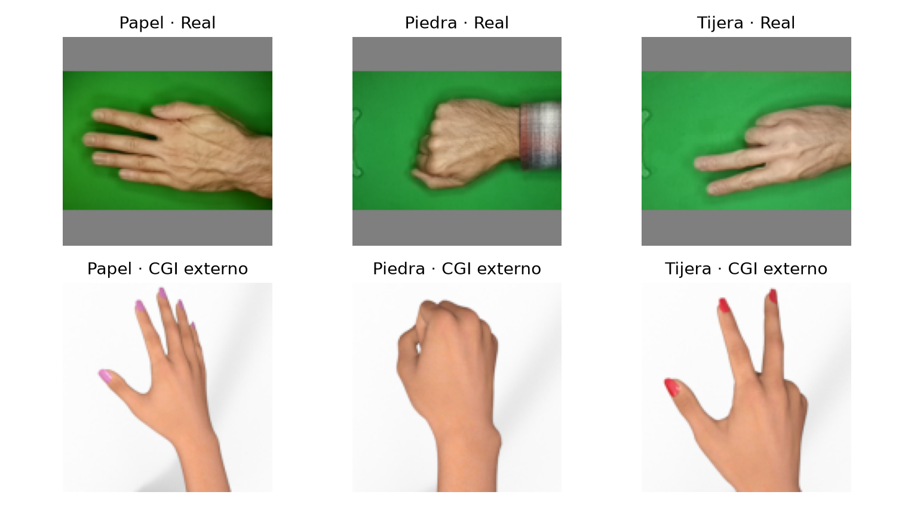
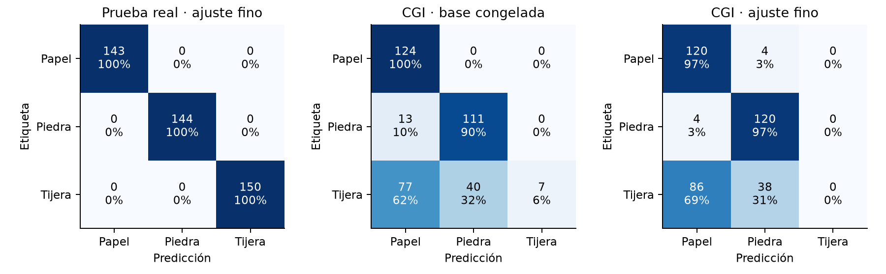
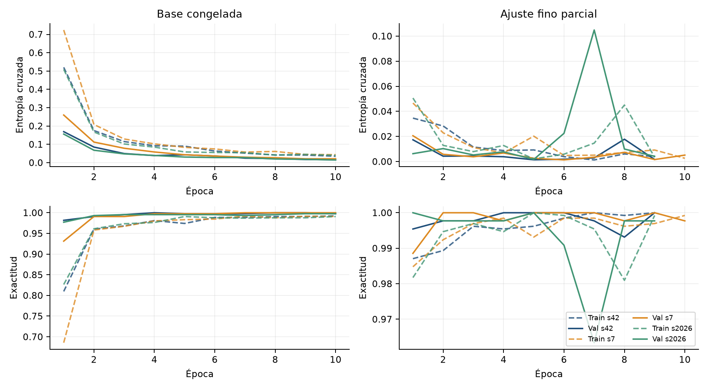
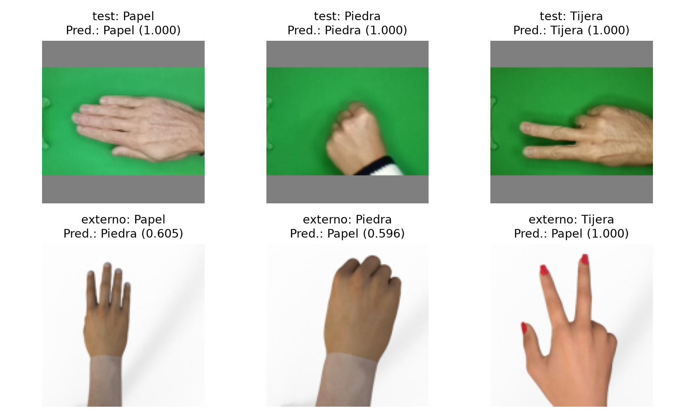

Notebook y código: Abrir la actividad 3 en el repositorio público de GitHub.
Clasificamos una imagen de mano en papel, piedra o tijera. Elegimos este problema porque permite evaluar una red preentrenada con pocos datos y analizar si el ajuste fino mejora el modelo con la base congelada. Nuestro alcance es una mano visible, centrada y con un fondo semejante al conjunto de entrenamiento; no planteamos un detector general de manos.
Usamos las 2.188 fotografías de rps-cv-data-science, de DrGFreeman, bajo CC BY-SA 4.0. Los conteos siguientes provienen de los archivos descargados; difieren ligeramente de los conteos por clase del README de origen. Reservamos además 372 imágenes CGI de Laurence Moroney, CC BY 2.0, para una evaluación externa que no intervino en entrenamiento ni selección.
| Clase | Entrenamiento | Validación | Prueba | Total real |
|---|---|---|---|---|
| Papel | 427 | 142 | 143 | 712 |
| Piedra | 437 | 145 | 144 | 726 |
| Tijera | 450 | 150 | 150 | 750 |
| Total | 1314 | 437 | 437 | 2188 |

Revisamos archivos, píxeles y semejanza visual. Agrupamos tres pares con correlación ≥ 0,985 y distancia dHash ≤ 4; quedaron 2.185 grupos y ninguna exclusión. Aplicamos StratifiedGroupKFold de 10 pliegues, semilla 42: seis para entrenamiento, dos para validación y dos para prueba. Verificamos que no hubiera grupos ni píxeles idénticos compartidos. No existen identificadores de persona o sesión: este control reduce fugas visuales, pero no demuestra independencia entre sujetos.
Convertimos BGR a RGB y conservamos la proporción mediante letterbox a 128 × 128, con interpolación AREA y relleno 127. La entrada tiene forma (N, 128, 128, 3). El modelo transforma x en x/127,5 − 1, rango esperado por MobileNetV2. Solo aumentamos entrenamiento, antes de esta normalización.
| Transformación aleatoria | Rango | Justificación |
|---|---|---|
| Volteo horizontal | Probabilidad 0,5 | La clase no depende de la mano u orientación lateral. |
| Rotación y traslación | ±18°; ±5 % por eje | Variación moderada de posición sin cambiar el gesto. |
| Zoom | ±10 % | Tolerancia a distancia; evitar recortes extremos. |
| Contraste y brillo | Factor 0,85-1,15; ±25,5 niveles | Variación de iluminación; conserva dedos y silueta. |
Usamos MobileNetV2 con pesos ImageNet, α = 0,35 y sin su clasificador original (Sandler et al., 2018; Keras, s. f.). Sus convoluciones separables y bloques residuales invertidos reducen el costo. La salida de la base es 4 × 4 × 1.280. Agregamos promedio espacial global, dropout 0,2 y una capa de tres logits.
El promedio global evita una cabeza densa sobre 20.480 valores. La nueva capa tiene 1.280 × 3 + 3 = 3.843 parámetros; el modelo completo tiene 414.051. Adam minimiza entropía cruzada categórica dispersa from_logits=True.
| Etapa | Capas entrenables | Parámetros | LR / máximo de épocas |
|---|---|---|---|
| Referencia congelada | Solo cabeza | 3.843 | 10⁻³ / 10 |
| Ajuste fino | Desde block_13_expand y cabeza; BN congeladas | 306.611 | 10⁻⁴ / 12 |
Primero estabilizamos la cabeza; después adaptamos los bloques superiores, preservando los filtros iniciales. Reducimos diez veces la tasa para limitar cambios bruscos en pesos útiles. Recompilamos al descongelar. La base se llama con training=False para conservar estadísticas de BatchNormalization, como recomienda TensorFlow; esto no impide actualizar las convoluciones habilitadas.
Fijamos lotes de 32 y semillas 42, 7 y 2026. Cada etapa restaura la mejor pérdida de validación, con paciencia 4 y mejora mínima 10⁻⁴. Elegimos el ajuste fino porque su F1 macro medio de validación supera en más de 0,001 al de la referencia: 1,0000 frente a 0,99845. La decisión quedó guardada antes de evaluar prueba y CGI. La semilla 42 se fijó para ejemplos, sin seleccionarla por prueba.
Control verificable: la base congelada no cambió; en ajuste fino cambió el kernel de block_13_expand y quedaron cero capas BatchNormalization entrenables. El archivo control_finetuning_s42.json registra un cambio L2 de 0,10944.
Reportamos media ± desviación estándar entre tres semillas; no son intervalos de confianza ni un ensamble. Las particiones, la cabeza y la aumentación son comunes. El ajuste fino continúa la referencia y añade entrenamiento; comparamos estrategias de adaptación, no dos presupuestos iguales.
| Conjunto | Etapa | Exactitud (%) | F1 macro |
|---|---|---|---|
| Validación | Congelada | 99.85 ± 0.13 | 0.9985 ± 0.0013 |
| Validación | Ajuste fino | 100.00 ± 0.00 | 1.0000 ± 0.0000 |
| Prueba real | Congelada | 100.00 ± 0.00 | 1.0000 ± 0.0000 |
| Prueba real | Ajuste fino | 100.00 ± 0.00 | 1.0000 ± 0.0000 |
| CGI externo | Congelada | 62.72 ± 2.76 | 0.5190 ± 0.0371 |
| CGI externo | Ajuste fino | 57.80 ± 6.08 | 0.4743 ± 0.0439 |
La clase mayoritaria de entrenamiento es tijera: predecirla siempre obtiene 34,32 % de exactitud y F1 macro 0,1704 en prueba. La transferencia mejora ampliamente esta referencia trivial. El ajuste fino solo agrega 0,15 puntos porcentuales en validación y 0,00 en prueba; por tanto, no podemos atribuirle una mejora del desempeño final en el dominio real.
| Dominio | Clase | n | Precision | Recall | F1 |
|---|---|---|---|---|---|
| Real | Papel | 143 | 1.000 | 1.000 | 1.000 |
| Real | Piedra | 144 | 1.000 | 1.000 | 1.000 |
| Real | Tijera | 150 | 1.000 | 1.000 | 1.000 |
| CGI | Papel | 124 | 0.478 | 0.989 | 0.641 |
| CGI | Piedra | 124 | 0.866 | 0.745 | 0.782 |
| CGI | Tijera | 124 | 0.000 | 0.000 | 0.000 |
Promedio por clase entre semillas, sin sumar soportes. En prueba real, precision, recall y F1 macro y ponderados son 1,000. En CGI, las clases tienen el mismo soporte: el promedio macro coincide con el ponderado. La precisión macro del ajuste fino es 0,448; recall macro, 0,578; F1 macro, 0,474.

El ajuste fino no recupera ninguna tijera CGI en las tres semillas; la referencia alcanza recall 0,035. Ambos modelos son sensibles al cambio de dominio.

La referencia converge rápido y termina con pérdidas de validación bajas. En ajuste fino aparecen oscilaciones, especialmente con semilla 2026; restaurar el mejor punto evita conservar la caída tardía. La pérdida de entrenamiento puede ser mayor porque incluye imágenes transformadas y dropout. Una brecha pequeña dentro de este dominio no prueba generalización a otros fondos.

La tijera sintética se confunde con papel incluso con confianza redondeada a 1,000. La orientación vertical, el fondo blanco y la textura sintética son cambios simultáneos; no aislamos cuál causa el error. Las rotaciones de ±18° del entrenamiento no cubren un giro de 90°. Estos ejemplos muestran que una confianza alta no equivale a una predicción fiable fuera del dominio.
Para 437/437, Wilson da un IC 95 % orientativo de [99,13 %; 100 %], suponiendo imágenes independientes. Como no conocemos sujetos o sesiones, puede ser optimista. Un bootstrap pareado de 2.000 réplicas sobre 12 grupos de secuencia CGI sitúa la diferencia ajuste fino − congelada en −4,93 puntos, IC [−11,74; 0,99]. El intervalo incluye cero y los grupos no representan personas independientes.
Ejecutamos en CPU de un Mac M4 Pro de 12 núcleos y 24 GB: Python 3.12.11, TensorFlow 2.21.0, Keras 3.15.1 y NumPy 2.5.3. Conservamos seis modelos, predicciones por imagen, manifiestos, curvas e historiales. Los tiempos siguientes corresponden a fit, sin descarga, preparación ni evaluación.
| Semilla | Etapa | Épocas ejecutadas | Mejor época | Tiempo (s) |
|---|---|---|---|---|
| 42 | Congelada | 10 | 10 | 23.81 |
| 42 | Ajuste fino | 9 | 5 | 24.02 |
| 7 | Congelada | 10 | 9 | 23.33 |
| 7 | Ajuste fino | 10 | 6 | 26.78 |
| 2026 | Congelada | 10 | 10 | 26.08 |
| 2026 | Ajuste fino | 9 | 5 | 25.32 |
El notebook A3_transferencia_gestos_rps.ipynb reconstruye tablas y comprueba los archivos. El código completo está en src/. Desde la carpeta que contiene src/, el entrenamiento se reproduce con el entorno descrito en requirements_u3.txt:
python src/descargar_datos.py python src/preparar_datos.py python src/preparar_pesos.py python src/entrenar_a3.py --force python src/analizar_a3.py
El modo normal del notebook usa los modelos guardados; REENTRENAR=True vuelve a ajustar las seis redes. El manifiesto tiene SHA-256 140bd2295f70727ee…; el valor completo y las versiones están en resultados/config_A3.json. Conservamos las atribuciones en recursos_y_licencias.md.
La transferencia permite resolver este conjunto con una cabeza pequeña. El ajuste fino está implementado y verificado, pero su ventaja de validación no se traduce en una mejora de prueba. En este caso, actualizar más capas no mejoró la clasificación del conjunto de prueba. Para un uso con fondos u orientaciones distintas necesitamos nuevas fotografías representativas, particiones por persona y una prueba externa real. Las imágenes CGI sirven como prueba de estrés, no como sustituto de esa evaluación.
DrGFreeman. (s. f.). Rock-Paper-Scissors image dataset [Conjunto de datos]. GitHub. https://github.com/DrGFreeman/rps-cv-data-science
Moroney, L. (s. f.). Datasets: Rock, Paper, Scissors [Conjunto de datos]. https://laurencemoroney.com/datasets.html
Sandler, M., Howard, A., Zhu, M., Zhmoginov, A., & Chen, L.-C. (2018). MobileNetV2: Inverted residuals and linear bottlenecks. Proceedings of CVPR, 4510-4520. https://openaccess.thecvf.com/content_cvpr_2018/html/Sandler_MobileNetV2_Inverted_Residuals_CVPR_2018_paper.html
TensorFlow. (s. f.). Transfer learning and fine-tuning. https://www.tensorflow.org/tutorials/images/transfer_learning
PyTorch Contributors. (s. f.). Transfer learning for computer vision tutorial. https://docs.pytorch.org/tutorials/beginner/transfer_learning_tutorial.html
Keras. (s. f.). MobileNet, MobileNetV2, and MobileNetV3. https://keras.io/api/applications/mobilenet/